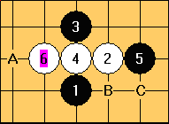
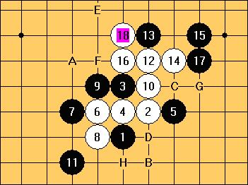
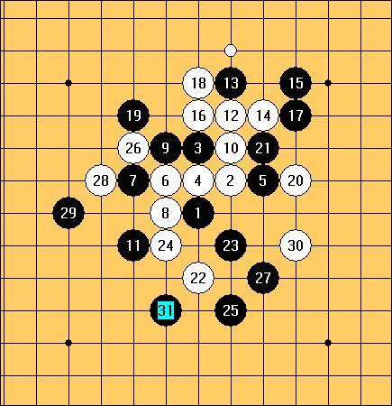
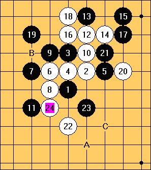

非攻之攻
#1 非攻之攻 作者：王小 发表时间：2009-4-17 15:07:32
当优势局面的时候，很多初学者都喜欢攻击，攻的天花乱坠，但是如果对方都防对了，随着攻击，局面变得混乱，攻的越凶，反而更容易输棋。这是为什么呢？
首先，我们应该理解，棋是一步一步下的。当你进攻的同时，你的棋是不是变强了？对方的棋是不是也增强了？攻击的结果到底是加强了自己，还是加强了对方呢？如果，我们攻击的结果只是让对方增强，或者说让对方的棋比自己的棋更强而不得不去防守，那这样的进攻有意义么？进攻的目的是什么？难道是不是要获取利益么？
我们设想一下，如果一步棋，感觉并不是一步进攻的棋，但是因为这一步棋我们获取了利益，那不是等于很好进攻么？没有出鞘的宝剑往往更有力，呵呵！
我们先来看看这个局面

这个局面下白棋只有一个岷三，没有任何的后续手段，而黑棋有B，C两个好点都可以形成活三，感觉B，C两点都是很好进攻点。但是我们研究就会发现，B，C两就算可以赢，后面的局面多会很复杂起来，局面控制起来也有一定的难度。当然我并我们并没有说说B，C两点一定不好。那我们再来看看A点，A点看起来不是一手进攻的棋，但是我们研究会发现走了A，白棋的岷三被扼杀了，同时白棋没有很好扩展点，无论白棋怎么走，优势依然会牢牢的在黑棋这边。所以说，A虽然不是攻击点，但是隐藏这强大的后续攻击力。就像是，我们先把宝剑收起来，积蓄力量。
这是一种局面演变的结果。

在这局面我们可以看到黑的宝剑积蓄了很大的力量。我们看到G点活三好像有很多后续手段，但是我们仔细一算，也没有那么容易获胜，局面很复杂。我们在来看看F，C，D 这三点都是单纯的防守，A，B 两点可以理解为边控制白棋边做棋的手段，这种手段不会把局面导致复杂而黑棋又能保持很好优势，是我喜欢的棋。把先手给白棋吧，看他们能把我怎么样，反正他化解不了我的优势，最终先手还不是要给我。我选择了A点，因为感觉白上面还是有一点攻击势头。

白棋想通过进攻、做棋，化解我的部分优势。的确白棋化解了一些棋，但是白棋也把自己的力量用的差不多了。24白棋防守左边，也在下面做一点攻击力量，来控制黑棋。这个时候我选者了A点。为什么呢？我是这样理解的，我选择了A点，一方面把白棋下面的攻击力量全部化解，同时也保留了B这个好点, 创造出C这个好点。果然，白棋选择了在B点防守，自然，我也就选择了C点。

31点继续这种手段，到此，白棋有先手，但是没有办法防守了，也是黑棋宝剑出鞘的时候了。呵呵。 通盘黑棋并没有杀气，但是却让白棋很压抑，这样的棋看似软弱，却暗藏杀机，我喜欢下。 （本文只是我个人意见 仅限参考）
［此帖子已被 有志青年 在 2011-4-30 17:33:36 编辑过］
［此帖子已被 有志青年 在 2011-4-30 17:35:32 编辑过］
［此帖子已被 失落刀 在 2011-5-1 16:11:52 编辑过］
#2 Re:非攻之攻 作者：忧郁的双眼 发表时间：2009-4-17 23:22:30
讲的很好
值得顶起来
#3 Re:非攻之攻 作者：魔坠人间 发表时间：2009-4-18 12:24:00
似乎可以理解为在优势局面下把对方防死~#4 Re:非攻之攻 作者：王小 发表时间：2011-5-1 14:11:36
非攻之攻☆此文系转载，原作者是：戴晓涵
〔本站所有内容均免费，版权归原作者所有，如有不妥，请与本站联系。〕
明明是我自己写的， 扎个作者成 戴晓涵 了？？？
晕啊~
#5 Re:非攻之攻 作者：杨文浩 发表时间：2011-5-1 14:13:54
可能是你自己发表时，搞错了，也可能是有志帮忙改了，你要确定，这篇文章是不是你写的，不是，就一定要加原作者，如果是，你去问问有志青年吧#6 Re:非攻之攻 作者：王小 发表时间：2011-5-1 14:16:31
晕， 我自己写的， 我还不知道哦。这篇是我刚学棋是写的。#7 Re:非攻之攻 作者：有志青年 发表时间：2011-5-1 15:04:30
王小是小天的小号？
#8 Re:非攻之攻 作者：厦门小天 发表时间：2011-5-1 16:01:05
楼主作者写串了，是他本人写的，YZLS帮修改下吧#9 Re:非攻之攻 作者：踵酃 发表时间：2011-5-1 23:06:38
这种事，竟然乌龙了两年